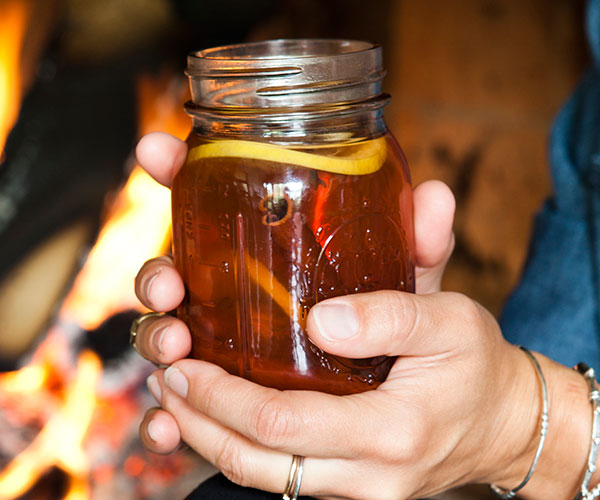

Earl Grey Hot Toddy

Super quick and simple, this drink is perfect to warm up on a cold, blustery, winter day. Especially if you're a little under the weather!
Ingredients
- 8 ounces Earl Grey tea, steaming hot
- 1 ½ ounces whiskey
- 1 teaspoon freshly squeezed lemon juice
- 1 teaspoon clover honey
- Lemon slices, cinnamon sticks, cloves for garnish
Steps
- Pour the Earl Grey tea into your favorite mug. Stir in whiskey, lemon juice, and honey.
- Garnish with a slice of lemon stuck with cloves and a cinnamon stick. Enjoy hot!